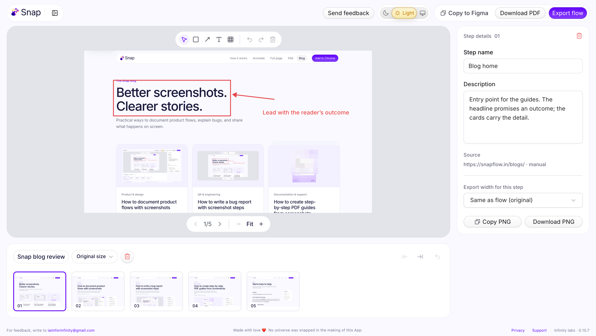
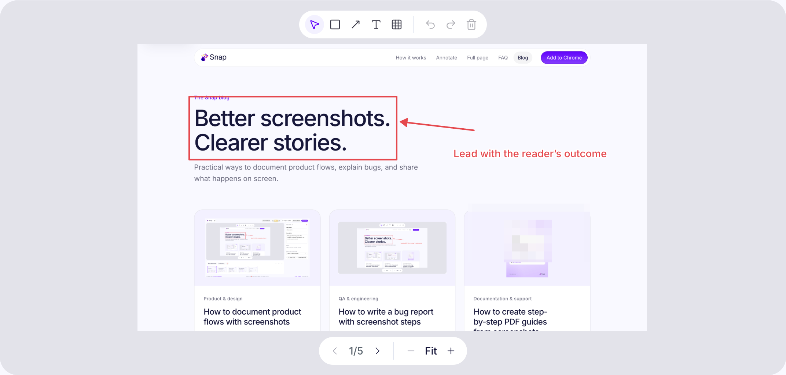
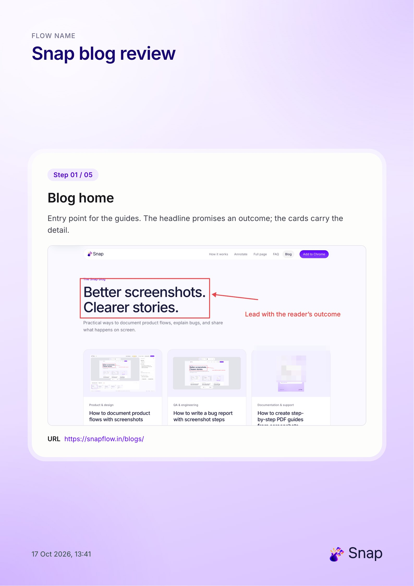

Product & design
How to document product flows with screenshots
Capture a user journey in Chrome, annotate the important moments, and turn an ordered screenshot flow into a useful design review.
Read articleThe Snap blog
Practical ways to document product flows, explain bugs, and share what happens on screen.

Product & design
Capture a user journey in Chrome, annotate the important moments, and turn an ordered screenshot flow into a useful design review.
Read article
QA & engineering
Make browser bugs easier to understand with ordered screenshots, clear reproduction steps, expected results, and focused annotations.
Read article
Documentation & support
Turn a browser workflow into a clear PDF guide with ordered screenshots, concise instructions, annotations, and a final sharing review.
Read article